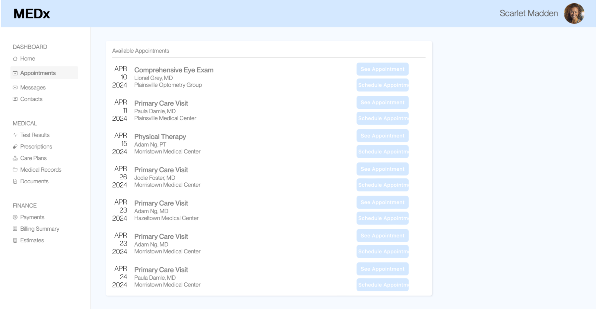
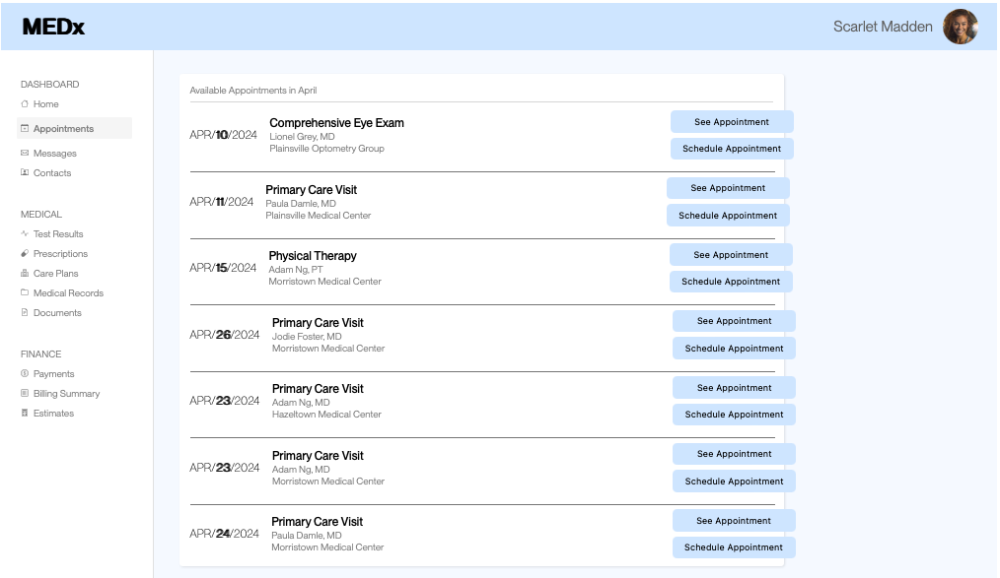
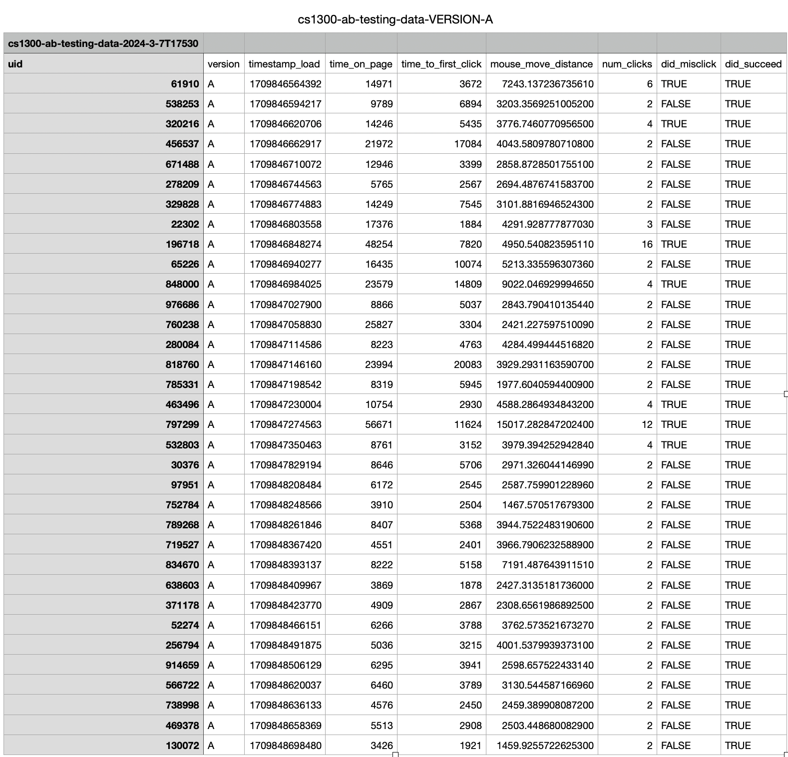
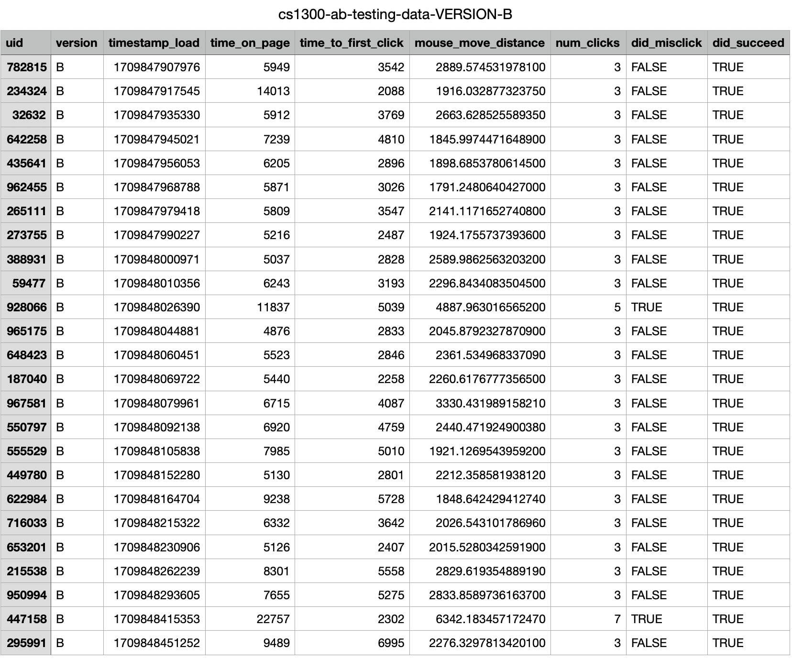

A/B Testing is a way to compare two versions of a product to figure out which performs better via user testing. To establish what makes something better, we will use a metric. To test, participants are randomly given either Version A and B to test where the participants are already users who are using the site.
In our scenario, there are two versions of a site that will be used for scheduling appointments with various doctors. Version A of the site is the baseline while Version B is modified by myself in a way that would impact the user’s flow in completing a task. Version B is changed by bolding texts within the buttons and important information such as the date and type of appointment. The button size is also slightly bigger. I also added lines between appointments to easily segment which button belongs to which appointment.
Version A and Version B is shown below:
Version A
Version B
The task for the following participants was to schedule an appointment with Adam Ng, MD at Morristown Medical Center on April 23, 2024. The participants were around 35 classmates who tested and helped collect the data.
The null hypothesis is the hypothesis that there is no difference between Version A and Version B, where any difference is due to change. The alternative hypothesis is the hypothesis that there is a difference between Version A and Version B where any difference is not due to chance, making it statistically different.
After collecting the data, we want to interpret the data. The data is shown below for both Version A and Version B.
Version A
Version B
To effectively interpret the data from the testing and compare the two versions, we will compare three metrics. These metrics will help evaluate the performance of Version A and Version B. To formally test it, we will set up a null hypothesis and alternative hypothesis as these will prove whether the versions are statistically different or not.
The metrics we have are shown below with the null and alternative hypothesis with reasonings as to why the hypothesis is justified.
Null:There is no difference in the misclick rate between users that see Version A and users that see Version B.
We predict that we will reject the null hypothesis as the difference between the versions is substantial enough to cause the users to click the correct button for the appointment. This is because the features added will help direct and help signify where to click as the features are highlighted to show that they are important and that they do something.
Alternative:Users using Version A have a higher misclick rate than users using Version B.
We believe this will be the case because the line segmentation and the bolded letters in Version B showing the important details such as the date and the button text signifying scheduling appointments will help the user identify which scheduling visit that they should choose.
Null:There is no difference in the time spent on the page between users that use Version A and users that see Version B.
We predict that we will reject the null hypothesis as the change in the versions is enough to lower the amount of time spent on the page. This is because even though they are acclimated to the interface, the extra features such as bolding will help them identify the date and where to click since it guides the users to the button.
Alternative:Users using Version A have a higher time spent on the page than users using Version B.
We believe this will be the case because the color contrast in Version A is harder to see where the text in the important features such as the buttons, the date, and the details of the appointment are all the same font color. This makes it hard to see at first, so when scanning the page, it will take a longer time for the user whereas in Version B, there is bolded text that users can easily identify where the information is present at.
Null:There is no difference in the number of clicks between users that use Version A and users that see Version B
We predict that we will fail to reject the null hypothesis as the users that we are testing the website on already have experience with the page. Also, with a directed task, the users will most likely be focused on accomplishing that task first. Thus, with the number of clicks, the users will most likely only click to find and finish the task after mainly observing the interface instead of trying to click through it and observe what other buttons there are.
Alternative:Users using Version B have a higher number of clicks than users using Version A.
We believe this will be the case because the color contrast mentioned above will cause the users to acknowledge that there are more buttons that are functional. This makes it more likely for users to click on certain areas or buttons to either investigate what they are or to determine if that is the correct function they were looking for.
A t-test is used to compare the means of two given samples to determine if there is a significant difference in average values. There are different types of t-tests. We use a one-tailed t-test if there is directionality where the alternative hypothesis states that the metric is either bigger or smaller than the value in the null hypothesis. We use a two-tailed t-test if there is no directionality where it just measures if there is an effect in either direction.
A chi-squared test is used for categorical data to assess whether there is significant association between two categorical variables.
To test the hypotheses, we will run statistical tests which include a chi-squared test, one-tailed t-test, and a two-tailed t-test to determine whether the difference between versions A and B is statistically significant.
For the metrics below, I describe why I chose the specific statistical test, whether the difference between versions A and B is statistically significant, where we will set the alpha value 0.05 where we will compare it to the p-value, include any other important values, and conclude whether we will reject the null hypothesis.
| Outputs | Values |
|---|---|
| Degrees of Freedom | 1 |
| Chi-Squared | 1.612 |
| P-Value | 0.204 |
For this metric, I chose to use a Chi-Squared Test. The reason for this is because the misclick rate data is categorical (users either misclicked or not). With a chi-squared test, the degrees of freedom equate to the number of categories minus one, thus resulting in 1. The chi^2 value of 1.612 indicates a greater difference between my observed and expected values. The p-value is a probability that measures the likelihood of obtaining a chi-squared value if the null hypothesis is true. The p-value is 0.204 means that there is a 20.4% probability that the observed difference in misclick rates could have occurred by random chance. This value is greater than 0.05, so the difference is not statistically significant. Thus, we fail to reject the null hypothesis.
| Outputs | Values |
|---|---|
| Degrees of Freedom | 41.9 |
| T-Score | -2.404 |
| P-Value | 0.0103 |
For this metric, I chose to use a One-Tailed T-Test. The reason we used a t-test was because the data used was continuous and we used a one-tailed test was because the hypothesis predicted a specific direction where the number of clicks would be higher for Version A than Version B. Since this is the case, when calculating the p-value(A greater than B), the Sample A will be Version B and Sample B will be Version A. The degrees of freedom is 41.9, indicating the number of independent values. This is not a whole integer because there is no equal variances. The T-score is -2.404 which is a measurement that indicates the difference between the means of the two versions, showing us that Version B has a slightly lower mean than Version A. The p-value is 0.0103 means that there is a 1.03% probability that the observed difference in the time on page could have occurred by random chance. This value is lower than 0.05, so the difference is statistically significant. Thus, we are confident that the alternative hypothesis is true.
| Outputs | Values |
|---|---|
| Degrees of Freedom | 40.6 |
| T-Score | -0.283 |
| P-Value | 0.389 |
For this metric, I chose to use a One-Tailed T-Test. The reason we used a t-test was because the data used was continuous and we used a one-tailed test was because the hypothesis predicted a specific direction where the number of clicks would be higher for Version B than Version A. The degrees of freedom is 40.6, indicating the number of independent values. This is not a whole integer because there is no equal variances. The T-score is -0.283 which is a measurement that indicates the difference between the means of the two versions, showing us that Version A has a slightly lower mean than Version B. The p-value is 0.389 means that there is a 38.9% probability that the observed difference in the time on page could have occurred by random chance. This value is higher than 0.05, so the difference is not statistically significant. Thus, we fail to reject the null hypothesis.
When running an A/B test, it is also important to look at the data itself to see any outliers, understand data distribution, have an initial understanding between the differences between the groups, and check the equality of the data. We can do this by investigating summary statistics (e.g. count, mean, median) as follows:
Note: The Misclick Rate Metric cannot be computed into Mean, Median, or Standard Deviation as it is a boolean value. Thus, the following conclusions will be made on Time on Page and Number of Clicks.
| Versions | Count |
|---|---|
| Version A | 34 |
| Version B | 24 |
Version A had 35 data points and Version B had 25 data points Version B has less users who participated, but that should not impact the results as the sample size in both groups should be enough to not impact the tests.
| Versions | Time on Page | Number of Clicks |
|---|---|---|
| Version A Mean | 12860.4 | 3.1 |
| Version B Mean | 7632.7 | 3.2 |
The mean is the average of the set of numbers of the given metrics.
| Versions | Time on Page | Number of Clicks |
|---|---|---|
| Version A Median | 8526.5 | 2.0 |
| Version B Median | 6243.0 | 3.0 |
The median is the middle value of the set of numbers in the given metric.
| Versions | Time on Page | Number of Clicks |
|---|---|---|
| Version A Variance | 140609949 | 8.7 |
| Version B Variance | 14795743.9 | 0.7 |
The variance shows how much the data points in a set are spread out from the mean where a higher variance shows that the data points are very spread out while a smaller means that the data points are close to the mean. The higher variance metrics indicates that the different users spent very different amounts of time on the page or number of clicks where some users could have less time or more time, the same applies to the number of clicks.